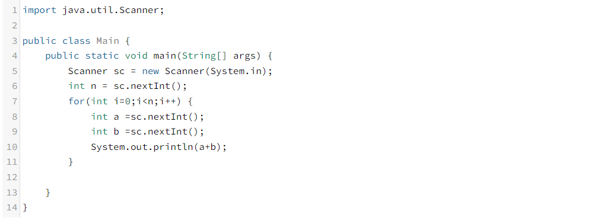
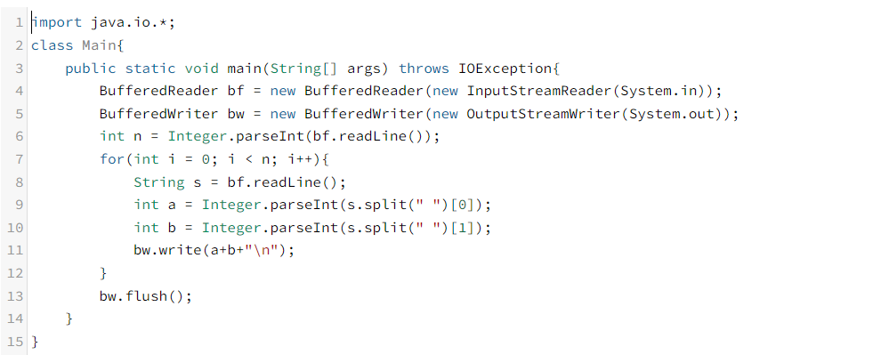

어쩌다가 Scanner말고 다른 입력방법을 찾게 되었나
며칠전 Java예제를 풀고있었는데 직접 값을 넣어보면 계속 문제의 정답은 맞지만 시간초과로
틀렸던적이 있었다. 그래서 인터넷으로 검색을 해본결과 Java에서는
Scanner말고도 입력방법이 있었다!
BufferReader를 이용해보자!
바로 BufferReader을 이용하여 입력을 받는것이다.그래서 BufferReader로 문제를 풀었는데 그때는 정답이었다.
하지만 BufferReader의 경우는 Scanner와 다르게 String으로만 읽고 가져오기
때문에 필요시 형변환을 해주어야 한다. 아래는 필자의 Scanner을 사용하여 나온 오답과
BufferReader을 사용해 나온 정답이다.
 